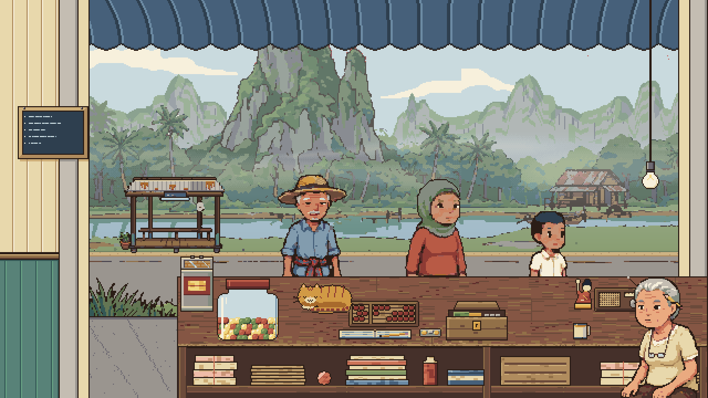
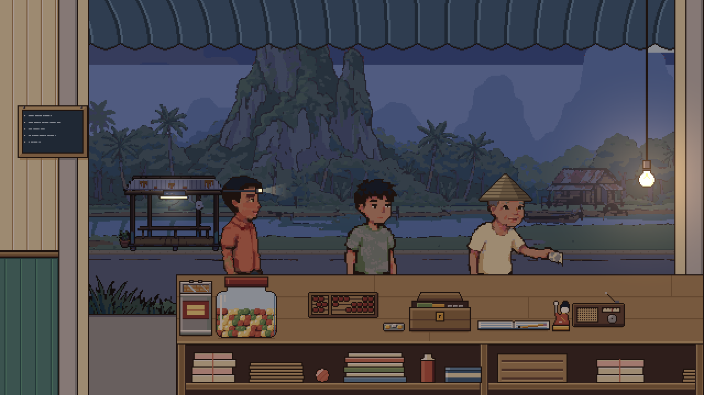
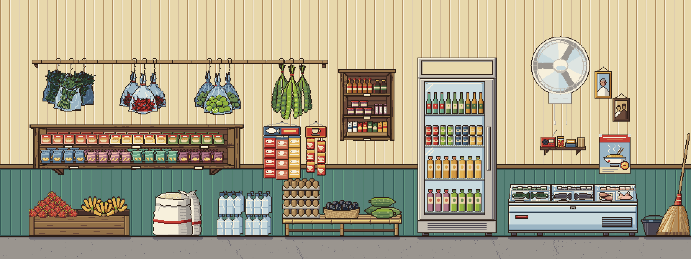
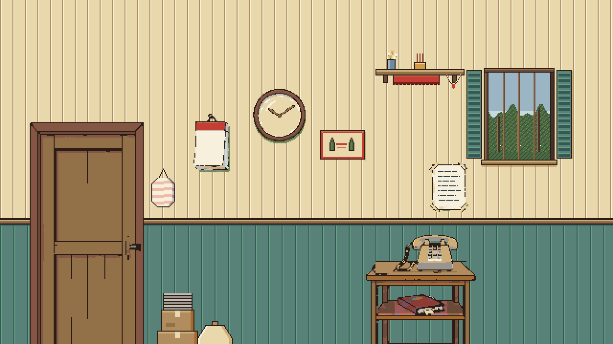
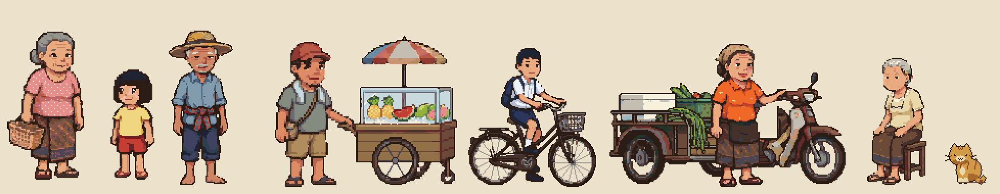

ช่วยดูภาพเกม "ร้านยายบุญ" หน่อย
เกมเล่นบนมือถือ เปิดร้านชำของยายในหมู่บ้านต่างจังหวัด รับของ เติมชั้น ขายให้คนในหมู่บ้าน ตอนนี้อยากรู้ว่าภาพแบบนี้ใช้ได้ไหม ก่อนทำต่อ





เกมเล่นบนมือถือ เปิดร้านชำของยายในหมู่บ้านต่างจังหวัด รับของ เติมชั้น ขายให้คนในหมู่บ้าน ตอนนี้อยากรู้ว่าภาพแบบนี้ใช้ได้ไหม ก่อนทำต่อ




